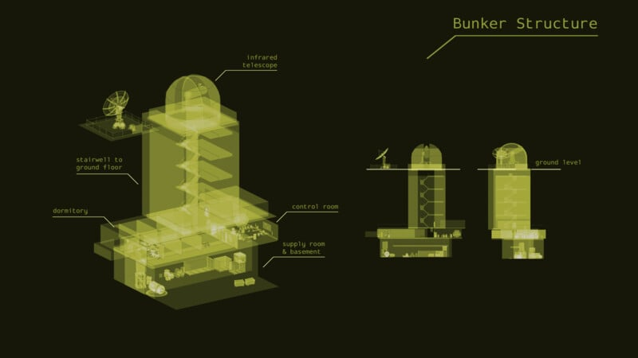
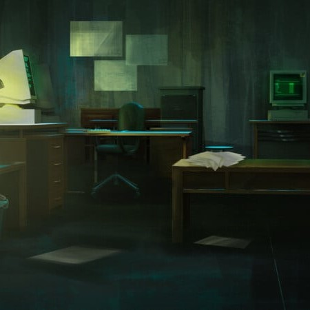
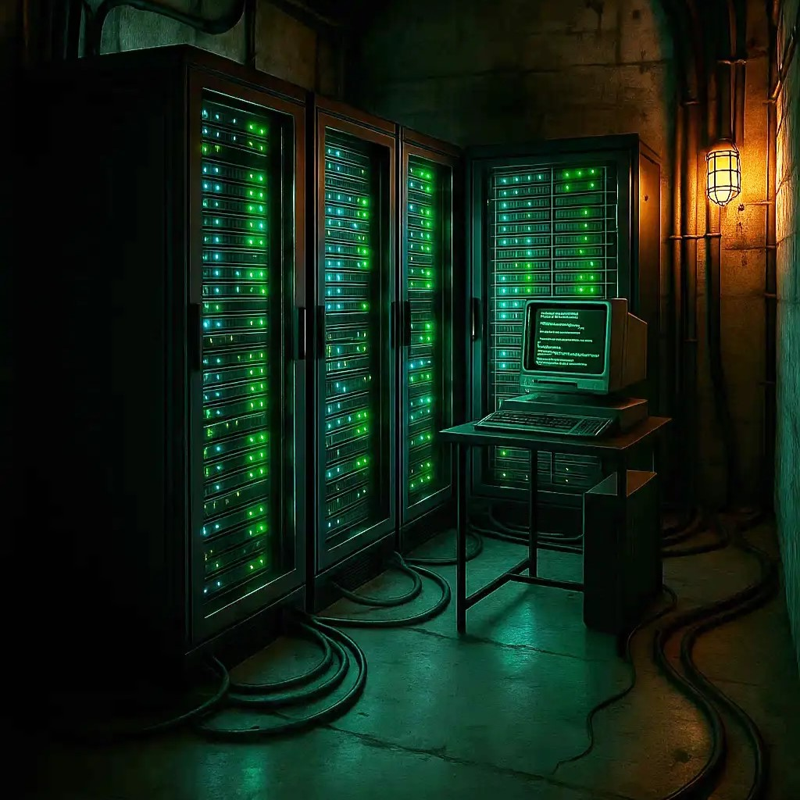
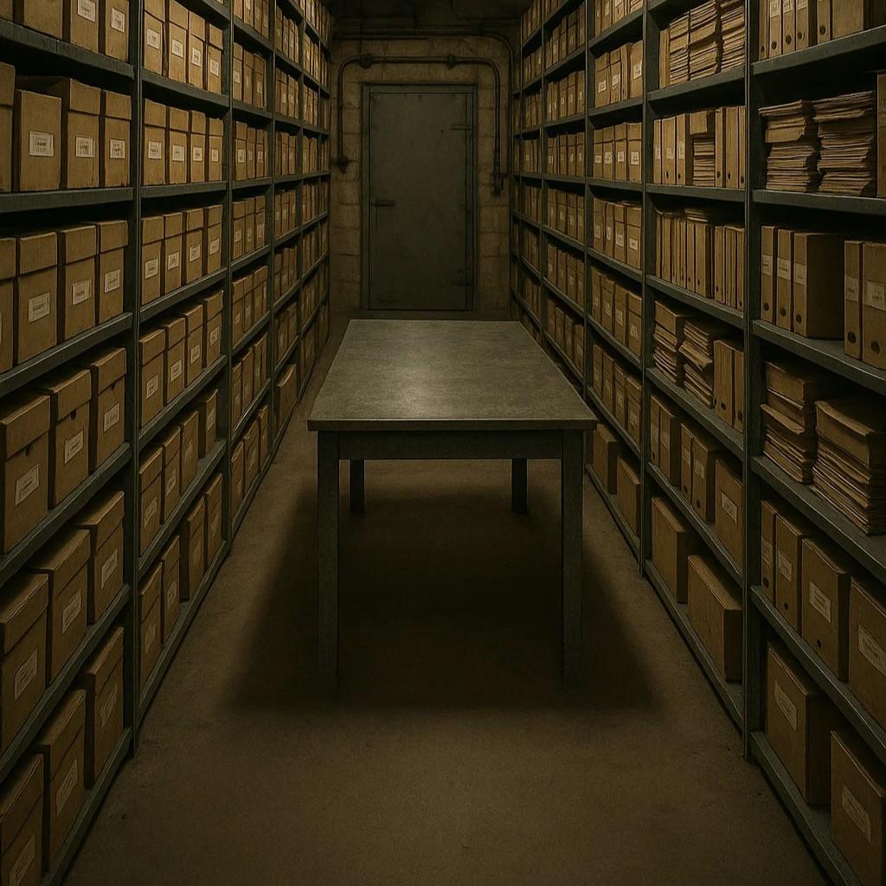
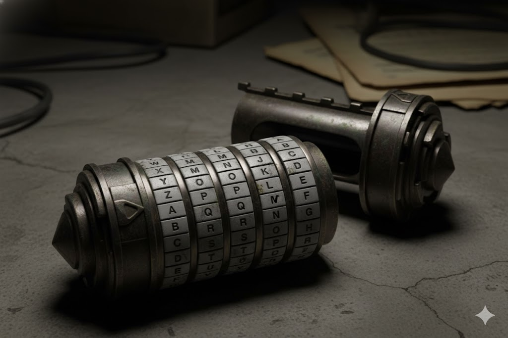

Présentation
Cyber Bunker est un escape game immersif qui s'adresse à un public
adulte passionné par la logique, la réflexion et l'univers
informatique. Les participants incarnent de jeunes informaticiens
fraîchement recrutés par une prestigieuse entreprise de
cybersécurité. Ce qui devait être un simple entretien d'embauche
prend soudain une tournure inquiétante. Au réveil, ils se retrouvent
enfermés dans un ancien bunker, à plusieurs dizaines de mètres sous
terre. Le système informatique du lieu a été compromis par des
pirates.

Les salles
Lors de votre aventure, vous aurez l'occasion d'explorer plusieurs
salles aux ambiances et aux mécaniques bien différentes. Les bureaux,
d'abord, vous plongeront dans une atmosphère bureaucratique, entre
piles de dossiers poussiéreux et vieux ordinateurs bourdonnants. Vient
ensuite la salle des serveurs, un véritable dédale de câbles épais
serpentant sur le sol et d'écrans clignotants diffusant une lueur
froide. Enfin, vous atteindrez les archives, un retour aux vieilles
méthodes, où les armoires métalliques grinçantes et les classeurs
jaunis par le temps racontent une autre époque.



Le Cryptex
Parmi les nombreux artefacts que vous croiserez, le cryptex se
distingue par son aura de mystère. Petit cylindre de métal orné de
symboles anciens, il renferme un secret que seule une combinaison
précise peut révéler. Son mécanisme, à la fois ingénieux et
impitoyable, protège jalousement son contenu : une erreur, et tout
pourrait être perdu. Froid au toucher, lourd de sens, le cryptex
n'est pas qu'un simple objet, c'est une énigme, un défi à la logique
et à la patience.
